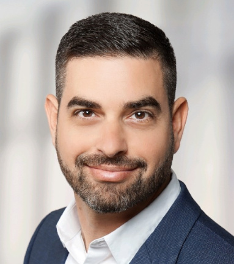

Team & Collaborations
Harpaz Team


Sagi Or - Media and marketing professional. BA in Communication and Political Science.

Publications
- Civil Power - Azi Lev-On & Shlomit Aharoni Lir
- Mapping the Tragedy: Building a Documentary Database of Massacre Victims - ILOHA
- 1,170: The Complete Puzzle of Israel's Deadliest Day - The Marker
- Interview with Revital Hovel, HaMakom Hakhi Ham BeGehenom
- Numbers Behind the Massacre, Guy Zohar, The Other Side
- Interview for Kipa website
Quotes, Thanks & Contributions
- Our data was a starting point for creating 7.10.360, the virtual museum by Kan 11
- Data validation work with the team for the "Return to October" exhibit at Glilot base. Yuval Leikin's post
- Contributed to the investigation of the murder of Semyon Abdilimov, article by Nir Hasson & Liza Rozovsky
- Contributed to the investigation of the murder of Natalia Demidova, article by Liza Rozovsky
- Contributed to the investigation of the murder of five Gazan workers by Hamas, article by Bar Peleg
- Contributed to the investigation of the abduction of six Thai workers near Re'im, article by Bar Peleg
- Contributed to kinship mapping for the kinocide report, article by Kochav Elkayam-Levy & the Civil Commission
- Provided information for N12 Nova party article
- Organized data for Tami Bar-Yosef on 69 dogs killed or missing, articles by Ilana Curiel and Assaf Pozailov
- Mapped a year of alarms for Haaretz
- Testified at the Civil Investigation Committee
- Mentioned in the Roberts Report
- Mentioned in the IDF History Department journal Yesodot 7
- Helped locate murder sites for families of Uri Tchernichovsky, Oleg Lifshitz & Vitaly Logvichenko, Ofek Arbiv, Yarin Efraim, and assisted three other families (not for publication)
Additional collaborators and contributors to the database
Team oct7map - Creators of the interactive map oct7map.com. Received reports from the public and various sources.
Michal Sarig-Kaduri - Government Relations Manager at Wix and former diplomat.
The National Library of Israel, National Identity Database (Mazal)
Bella Graff - Created the website And These Are the Names with a comprehensive list and breakdown by citizen groups.
Thank you to everyone who supported the project and participated in the documentation process.